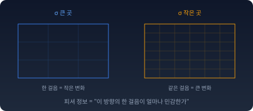

모델을 학습시켜 본 사람은 이런 일을 겪는다. 학습률을 그대로 두고 파라미터를 같은 크기만큼 옮겼는데, 어떤 때는 모델이 내놓는 확률이 거의 그대로이고 어떤 때는 확 바뀐다. 파라미터 공간에서 "한 걸음"이라고 부른 것이 곳마다 다른 거리였던 셈이다.
그렇다면 분포가 실제로 얼마나 바뀌었는지로 걸음을 재는 자(ruler)를 파라미터 공간에 놓을 수 있을까? 그런 자가 있다면, 그 자로 잰 땅은 평평할까, 휘었을까? 이 장은 이 두 물음을 차례로 따라간다.
피셔 정보: 분포가 모수의 떨림을 느끼는 정도
같은 크기만큼 모수(분포를 정하는 숫자)를 바꿔도, 어떤 분포는 거의 안 변하고 어떤 분포는 확 변한다. 이 '민감도’를 숫자로 쓸 수 있을까?
볼륨 다이얼 — 같은 1mm, 다른 변화
볼륨 다이얼을 1mm 돌렸을 때, 조용한 클래식 곡에서는 거의 차이가 안 들린다. 하지만 베이스가 꽉 찬 힙합 곡에서는 같은 1mm가 온 방을 울린다. 다이얼의 물리적 회전량은 같은데, 음악이 느끼는 변화의 크기가 다르다. 그 "느끼는 크기"가 피셔 정보다.
이퀄라이저 — 방향마다 다른 민감도
이퀄라이저의 저음 슬라이더를 올리면 힙합은 폭발하지만 피아노 독주는 별 차이 없다. 고음 슬라이더는 반대다. "어느 방향으로 흔들었느냐"에 따라 민감도가 다르다 — 모수가 여러 개일 때 피셔 정보가 스칼라가 아니라 행렬이 되는 이유다.

같은 한 걸음, 다른 민감도
왜 log p의 기울기인가
숫자로 먼저 보자. 앞면 확률 0.5인 동전을 0.51로 바꾸면 앞면이 나올 확률은 2% 늘어난다. 앞면 확률 0.01인 동전을 0.02로 바꾸면 같은 0.01을 옮겼는데 앞면이 나올 확률은 두 배가 된다. 분포가 “느끼는” 변화는 확률의 차이가 아니라 비율에 가깝고, 비율의 변화를 재는 것이 log의 기울기다. ∇log p = ∇p / p 가 이 상대적 변화를 잡아낸다. 왜 확률의 기울기마다 log가 붙는지는 이 장 마지막 절에서 다시 따진다.
데이터 x 하나를 보고, 모수 θ를 살짝 움직였을 때 log p(x|θ)가 얼마나 변하는지(∇_θ log p)를 모수에 대한 스코어(score)라 부른다. 디퓨전 모델이 쓰는 데이터에 대한 스코어 ∇ₓ log p와는 미분하는 대상이 다르다. 이 장의 스코어는 모두 모수에 대한 스코어다. 피셔 정보는 이 스코어가 얼마나 크게 흔들리는지, 곧 스코어의 분산이다. 모수가 하나일 때는 스칼라다.
스코어의 평균은 0 근처, 분산은 이론값과 셋째 자리까지 맞는다. σ를 절반으로 줄이면 피셔 정보는 네 배가 된다.
ML에서: 조심함의 정도
학습은 KL 발산(모형 분포가 데이터 분포와 얼마나 다른지 재는 비대칭의 양)을 줄이는 과정이다. KL을 줄이려면 파라미터를 바꿔야 한다. 그런데 얼마나 바꿔야 하는가? 민감한 영역에서는 조금만 바꿔도 분포가 크게 변한다 — 조심해야 한다. 둔감한 영역에서는 많이 바꿔도 분포가 별로 안 변한다 — 과감해도 된다. 피셔 정보는 이 "조심함의 정도"를 알려준다. 이것이 나중에 자연 기울기(natural gradient, 피셔 정보로 잰 같은 크기의 한 걸음 가운데 손실을 가장 많이 줄이는 방향으로 걷는 방법)의 핵심이 된다.
수확
“피셔 정보 = 모수에 대한 분포의 민감도 = 스코어의 분산 = 데이터가 모수에 대해 가진 정보량”
인물 이야기 — 로널드 피셔와 「한 사람이 만든 도구함」
로널드 피셔
1890년, 런던. 로널드 에일머 피셔(Ronald Aylmer Fisher)는 어려서부터 눈이 매우 나빴다. 그래서 종이와 펜 없이 말로 수학을 배웠고, 그 덕에 문제를 식이 아니라 공간의 모양으로 떠올리는 버릇이 들었다고 전해진다.
피셔가 풀고자 한 문제는 생물학에서 왔다. 케임브리지에서 수학을 공부한 뒤 그는 유전학에 빠져들었다. 멘델의 유전법칙과 다윈의 자연선택이 모순되는 것처럼 보이던 시절이다. 피셔는 1918년 논문에서 여러 유전자가 함께 작용하면 연속적인 변이가 나온다는 것을 보여 이 모순을 풀었다. 이 논문에서 그는 「분산(variance)」이라는 말을 도입하고 그것을 원인별로 나누었다. 이듬해 로댐스테드 농업시험장으로 옮긴 뒤, 그 생각을 분산분석으로 키웠다.
유전과 농사 실험의 데이터를 분석하려면 도구가 필요했는데, 당시의 도구로는 모자랐다. 그래서 피셔는 도구를 직접 만들었다. 최대우도추정(관측에 가장 높은 확률을 주는 모수를 고르는 방법), 충분통계량(데이터에서 모수에 대한 정보를 하나도 잃지 않는 요약), 그리고 이 절의 피셔 정보(데이터가 모수에 대해 가진 정보의 양)다.
이 도구들은 다툼 속에서 다듬어졌다. 당시 통계학의 중심에는 칼 피어슨(Karl Pearson)이 있었고, 피어슨은 표본의 평균·분산 같은 값을 분포의 것과 맞추는 방법(모멘트 방법)으로 분포를 맞췄다. 피셔는 1922년 논문에서 추정 방법의 좋고 나쁨을 추정값이 흔들리는 폭(분산)으로 견주자고 제안했고, 그 잣대로 재면 모멘트 방법이 최대우도추정보다 훨씬 크게 흔들리는 경우가 있음을 보였다. 같은 해에 피어슨의 카이제곱 검정에서 자유도(마음대로 정할 수 있는 숫자의 개수)를 세는 법을 바로잡았다. 피어슨은 자신이 펴내던 학술지 『바이오메트리카』에서 곧바로 반박했고, 두 사람의 다툼은 여러 해 이어졌다. 1933년 피어슨이 은퇴하자 피셔가 유니버시티 칼리지 런던의 골턴 우생학 교수 자리를 이어받았다.
피셔는 이 도구들 사이의 연결을 감지하고 있었지만, 그것을 「기하학」이라는 언어로 쓰지는 않았다. 그 일을 시작한 것이 1945년의 라오(C. R. Rao)였고, 그 뒤를 이은 것이 1980년대의 아마리(Shun’ichi Amari)였다. 피셔가 만든 도구함의 도구들이 사실은 하나의 기하학적 구조의 여러 면이었다는 것을 밝혀내는 데 반세기가 더 걸린 것이다. 이 장에서 피셔 정보는 파라미터 공간의 자가 되고, 충분통계량으로 요약해도 변하지 않는 자는 이것 하나뿐이라는 정리도 만나게 된다.
피셔는 논쟁에서 물러서지 않는 사람이었고, 말년에는 흡연이 폐암을 일으킨다는 연구에 공개적으로 반대하기도 했다. 그러나 도구는 사람의 성격과 무관하게 살아남는다. 한 사람의 도구함이 한 학문의 기초가 된 드문 사례다.
문제 1. 하루의 날씨는 비 올 확률에 대해 얼마나 말해 주나
어느 지역에 날마다 비가 올 확률이 p이고, 날마다 따로 정해진다고 하자. 하루를 관측했을 때 그날의 스코어는 비가 온 날이면 log p를, 오지 않은 날이면 log(1 − p)를 p로 미분한 값이다. (가) p = 0.5일 때와 p = 0.1일 때, 비가 온 날과 오지 않은 날의 스코어를 각각 구하고, 스코어의 평균을 구하라. (나) 두 경우의 피셔 정보(스코어의 분산)를 구하라. 어느 쪽이 큰가? (다) 1000일 동안 비 온 날의 비율로 p를 어림한다. 두 경우에 어림값의 표준편차는 얼마인가? (나)의 값과 어떤 관계가 있는가?
함께 풀기
김민준
(가)부터요. 비가 오면 d log p/dp = 1/p, 안 오면 d log(1 − p)/dp = −1/(1 − p)예요. p = 0.5면 +2와 −2라서 평균 0. p = 0.1이면 +10과 −1.11이니까 평균은 (10 − 1.11)/2 = 4.44예요. 이번엔 0이 아니네요.
(나)는 분산이니까 p = 0.1이면 0.1 × 10² + 0.9 × 1.11² = 10 + 1.11 = 11.1이고, p = 0.5면 0.5 × 4 + 0.5 × 4 = 4예요. 식으로는 1/p + 1/(1 − p) = 1/(p(1 − p)). …이상해요. 비가 올지 말지 가장 모를 때가 p = 0.5인데, 그때 하루의 날씨가 가장 적게 알려 준다고요?
선생님
무엇에 대해 알려 주는지를 나눠 봐요. (다)를 계산해 보면요?
이서연
1000일 가운데 비 온 날의 비율은 평균이 p, 분산이 p(1 − p)/1000이에요. p = 0.5면 표준편차 0.0158, p = 0.1이면 0.0095. p = 0.1일 때 더 좁게 잡혀요.
이서연
그리고 0.0158 = 1/√(1000 × 4), 0.0095 = 1/√(1000 × 11.1)이에요. 어림값의 흔들림이 1/√(날 수 × 피셔 정보)예요. 피셔 정보가 크면 같은 날 수로 p를 더 좁게 잡아요. p = 0.5에서 모르는 건 내일 날씨이고, 피셔 정보가 재는 건 날씨가 p에 대해 주는 단서예요. 둘은 다른 물음이었어요.
선생님
그래요. 결과를 맞히기 어려운 정도와, 결과가 모수를 가려 주는 정도는 다른 양이에요. 피셔 정보는 뒤의 것을 재요.
김민준
여론조사 과제에서 지지율 2%인 후보의 오차가 50%인 후보보다 훨씬 작게 나오던 게 이거였네요. 그때는 공식에 넣기만 했는데.
문제 2. 스코어의 평균은 왜 0인가
(가) 정규분포 N(μ, σ²)에서 μ에 대한 스코어의 평균이 0임을 보여라. (나) 일반적으로 E[∂ℓ/∂θ] = 0을 증명하고, 증명의 어느 단계에 조건이 필요한지 밝혀라. (다) 균등분포 U(0, θ)에서 스코어의 평균을 구하라.
함께 풀기
김민준
(가)는 코드로 봤어요. σ = 2에서 표본 100개로 스코어 평균이 0.041, 1000개로 −0.028, 10만 개로 −0.00001이에요. 0으로 가니까 증명 끝이죠.
선생님
표본 평균이 0 근처라는 건, 참값이 0이라는 것과 같은 말이에요?
김민준
…아니요. 0.00001일 수도 있고, 표본을 백만 개 뽑아야 보이는 작은 값일 수도 있어요. 수치는 확인이지 증명이 아니네요.
이서연
(가)는 식으로 바로 돼. 스코어가 (x − μ)/σ²이고 E[x] = μ니까 0이야. (나)는 ∫ p · (∂p/∂θ)/p dx = ∂/∂θ ∫ p dx = ∂/∂θ 1 = 0. 모든 분포에서 성립해요.
선생님
그럼 (다)도 0이겠네요. 계산해 봐요.
이서연
p = 1/θ (0 ≤ x ≤ θ)니까 log p = −log θ, 스코어는 −1/θ예요. x와 상관없는 상수라서 평균도 −1/θ… 0이 아니에요.
이서연
제 증명의 어디가 틀렸죠? ∫p dx = 1은 θ가 뭐든 맞는데요.
선생님
적분 구간을 적어 봐요.
이서연
∫₀^θp dx예요. θ가 적분 구간 끝에도 들어 있어요. 이걸 미분하면 적분 안을 미분한 것 말고 경계 항 p(θ; θ) = 1/θ가 더 붙어요. 1/θ − 1/θ = 0이라 전체는 0이지만, 적분 안만 미분한 E[스코어]는 −1/θ예요. 미분과 적분을 바꿀 수 있으려면 분포의 받침(분포가 0이 아닌 범위)이 θ에 따라 움직이지 않아야 해요.
선생님
맞아요. 이런 분포에서는 피셔 정보의 성질도 여러 개가 깨져요. 이 책의 지수족(정규분포·베르누이처럼 log p = 모수 × (데이터의 요약값) − (정규화 항) 꼴로 쓰이는 분포의 모임)은 받침이 고정돼 있어서 안전하고요.
이서연
해석학 시간에 "미분과 적분의 순서를 바꾸기 전에 조건을 확인하라"를 귀에 못이 박히게 들었는데, 반례가 이렇게 생긴 거였네요.
문제 3. 다 배운 분류기의 기울기는 왜 0이 아닌가
고양이 사진인지 가리는 분류기가 로짓 z 하나를 내고, 고양이일 확률을 p = 1/(1 + e−z)로 준다. 어떤 종류의 사진은 열 장 가운데 아홉 장이 실제로 고양이이고, 분류기는 이미 그 종류에 p = 0.9를 준다. 사진 한 장의 로그우도(모델이 정답 라벨에 준 확률의 로그)를 z로 미분하면 (라벨 − p)가 된다(라벨은 고양이면 1, 아니면 0). (가) 고양이 사진과 아닌 사진에서 이 기울기는 각각 얼마이고, 사진 한 장에 대한 평균은 얼마인가? (나) 기울기의 분산은 얼마인가? (다) 이런 사진 100장을 한 미니배치로 뽑아 기울기를 평균 낸다. 그 평균의 표준편차는 얼마인가? 학습이 다 끝났는데도 미니배치 기울기가 0이 아닌 까닭은 무엇인가?
함께 풀기
김민준
고양이면 1 − 0.9 = 0.1, 아니면 0 − 0.9 = −0.9예요. 평균은 0.9 × 0.1 + 0.1 × (−0.9) = 0. 날씨 문제에서 확률로 무게를 단 거랑 같네요. 비 온 날이 고양이 사진이고요.
김민준
평균이 0이니까 기울기가 0이고 학습이 멈춘 거죠. 그런데 실제로 돌려 보면 다 배운 뒤에도 loss가 계속 오르락내리락해요. 코드 어딘가가 틀린 것 같아요.
선생님
사진 한 장의 기울기가 0이에요?
김민준
아니요, 0.1 아니면 −0.9예요. 평균이 0이라는 거지 한 장 한 장이 0인 건 아니네요.